Голосовой итог (1,5 мин)
Вывод: клип-лендинг – короткая страница-«клип» на 3–10 минут с одним сюжетом и одним действием. Струговец сделал сильный клип-трейлер кейса: доказательства скринами и умная кнопка в Telegram. Брать каркас и кнопку, но без его завышенных цифр и с запасным путём в форму.
Клип-лендинг – короткая посадочная, собранная как клип: один сюжет, 4–6 «кадров», в каждом один вопрос клиента и крючок на следующий кадр, в конце одно действие. Читается за 3–10 минут, время чтения написано на первом экране. Задача – не рассказать всё, а довести тёплого человека из рекламы или канала до следующего шага.
| Обычный лендинг | Квиз-лендинг | Клип-лендинг | |
|---|---|---|---|
| Длина | 10–20 блоков | 1 экран + вопросы | 4–6 кадров, 3–10 мин |
| Логика | отвечает на все вопросы подряд | сразу к расчёту | сюжет: результат → почему у других не так → что сделали → доказательства → шаг |
| Действия | несколько форм и кнопок | один квиз | одна кнопка, повторена после каждого куска |
| Переходы | прокрутка | шаги квиза | крючок-вопрос в конце кадра: «Какие 5 деталей?», «Как пересобрать за 26 дней?» |
| Трафик | поиск, реклама | реклама | тёплый: реклама на аудиторию, канал, пересылка |
Кто: Алексей Струговец, агентство, продаёт владельцам детейлингов «клиентов на дорогие услуги». Клип – реклама агентства, а кейс студии оклейки – доказательство. Сайт на Flexbe, Метрика с вебвизором.
go_to_telegram→
Пост №121 в канале @a_strugovec→
Статья 28 тыс. знаков на Телетайпе→
«Получить диагностику» – личка t.me/m/…→
Диагностика 30–60 мин→
Внедрение 55–70 тыс. ₽
Зачем ступенька через канал: человек попадает в канал и может подписаться, дальше его греют постами. Закреплённый пост №104 «База знаний для владельцев детейлинга» – это ещё и страница «спасибо» после заявки с основного сайта: «данные переданы, специалист свяжется за 15–30 минут, а пока – вот всё про систему».
4 блока + подвал. 7 330 px на компьютере, 9 750 px на телефоне. Тёмный фон, жёлтый акцент, заголовки Montserrat Black капсом. Нажмите на снимок – откроется целиком.
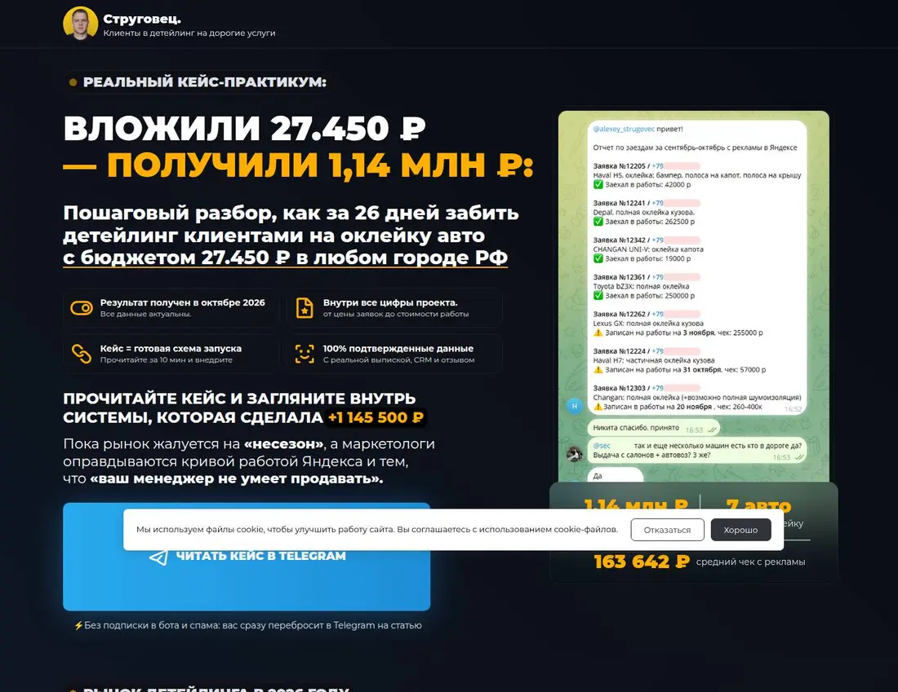
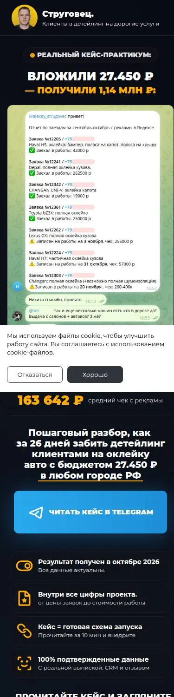
| Элемент | Что написано | Зачем |
|---|---|---|
| Шапка | Фото автора, «Струговец. Клиенты в детейлинг на дорогие услуги» | Лицо и позиционирование одной строкой |
| Дескриптор | «Реальный кейс-практикум» | Жанр: не реклама, а разбор |
| H1 | «Вложили 27 450 ₽ – получили 1,14 млн ₽» | Две цифры: вход и выход. Владелец сразу считает окупаемость |
| Подзаголовок | «Пошаговый разбор, как за 26 дней забить детейлинг клиентами на оклейку с бюджетом 27 450 ₽ в любом городе РФ» | Срок + бюджет + «в любом городе» снимает «у нас так не выйдет» |
| 4 плитки | Результат октябрь 2026 · все цифры проекта · кейс = схема, 10 мин · данные с выпиской, CRM, отзывом | Свежесть, полнота, польза, доказуемость |
| Враг | «Пока рынок жалуется на несезон, а маркетологи – на Яндекс и что "ваш менеджер не умеет продавать"» | Владелец узнаёт свои разговоры с подрядчиками |
| Справа | Скрин отчёта менеджера в Telegram: 7 машин, суммы, телефоны размыты; под ним 1,14 млн · 7 авто · 163 642 ₽ | Документ вместо картинки |
| Кнопка | «Читать кейс в Telegram» + «без подписки в бота и спама: вас сразу перебросит на статью» | Одно действие, страх «ботов» снят |
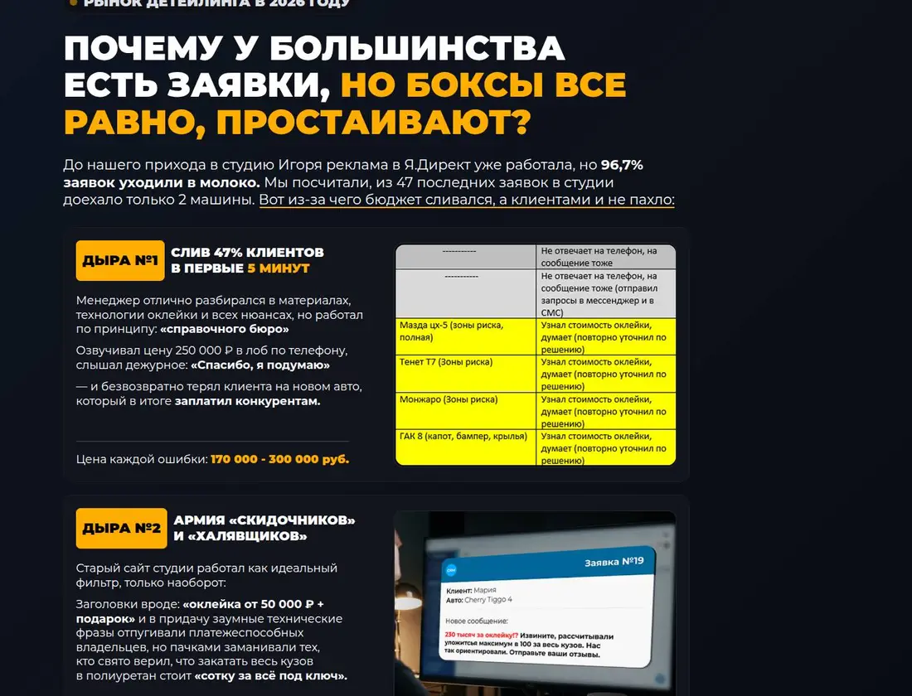
Вход: «до нас Директ работал, но 96,7% заявок уходили в молоко: из 47 заявок доехало 2 машины». Дальше две карточки одного вида: плашка «Дыра №N» + заголовок + 3 абзаца + скрин + строка «Цена ошибки» внизу.
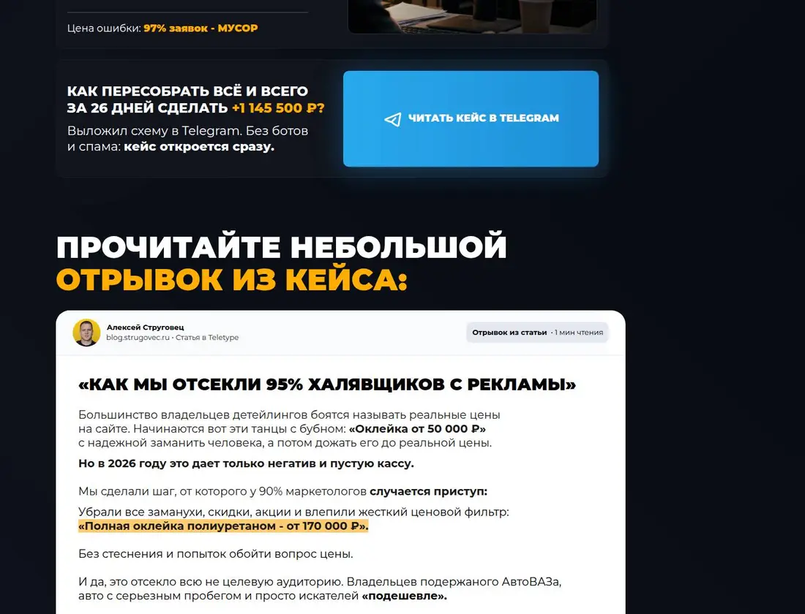
После дыр – карточка-повтор: «Как пересобрать всё и за 26 дней сделать +1 145 500 ₽?» и кнопка. Вопрос в карточке – тот, который возникает у читателя после дыр.
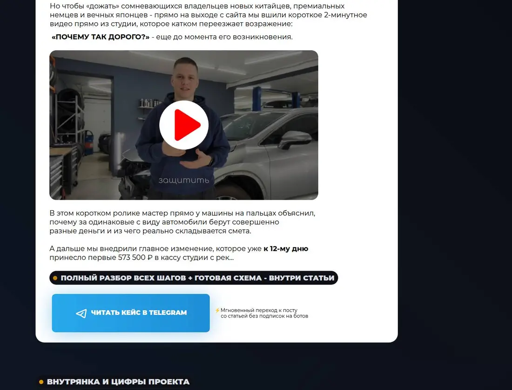
Оформлен как пост Телетайпа: автор, «blog.strugovec.ru · Статья в Teletype», «Отрывок · 1 мин чтения». Заголовок «Как мы отсекли 95% халявщиков с рекламы». Внутри два приёма: жёсткий ценовой фильтр «Полная оклейка полиуретаном – от 170 000 ₽» (выделен маркером) и 2-минутное видео мастера «почему так дорого». Текст обрывается на полуслове: «принесло первые 573 500 ₽ в кассу студии с рек…» → плашка «Полный разбор + готовая схема – внутри статьи» → кнопка.
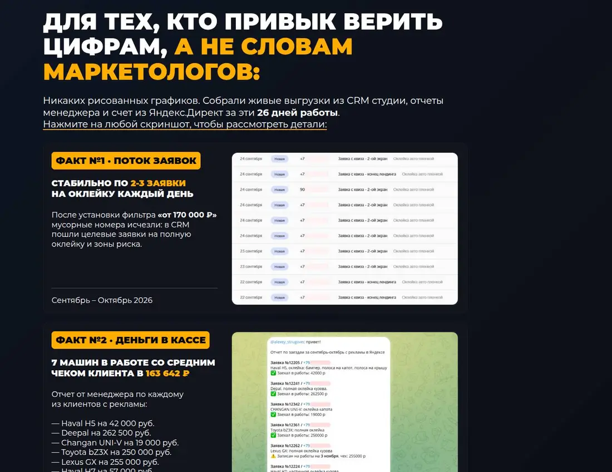
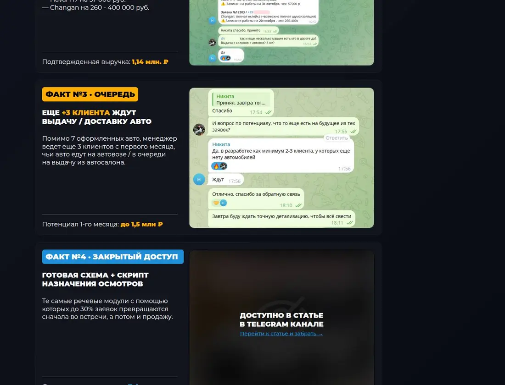
Заголовок «Для тех, кто привык верить цифрам, а не словам маркетологов». Подпись: «никаких рисованных графиков – живые выгрузки CRM, отчёты менеджера, счёт Директа. Нажмите на скриншот». 4 карточки «Факт №N · тема»:
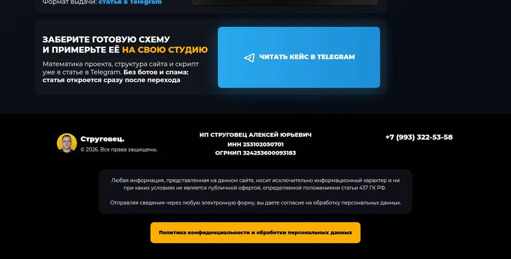
Финал: «Заберите готовую схему и примерьте её на свою студию. Математика проекта, структура сайта и скрипт – в статье». Подвал: ИП, ИНН, ОГРНИП, телефон, политика. Формы на странице нет.
| Кадр | Вопрос владельца студии | Ответ клипа | Какой вопрос рождает дальше |
|---|---|---|---|
| 1 | Это мне? Сколько вложить и получить? | 27 450 → 1,14 млн, 26 дней, любой город | Почему у меня не так? |
| 2 | Почему у меня заявки есть, а машин нет? | Менеджер-справочник и сайт со скидками | Как это починить? |
| 3 | Что конкретно сделали? | Ценовой фильтр + видео «почему дорого», остальное – обрыв | Это правда работает? |
| 4 | Не врут? | Скрины CRM, отчёт менеджера, очередь; схема и скрипт – только в статье | Где взять схему? → кнопка |
Кнопка – не ссылка, а скрипт. Причина: в РФ t.me в браузере без VPN часто не открывается, а приложение Telegram работает. Автор пишет это прямо в окне: «без VPN ссылки t.me могут тормозить».
go_to_telegram – один раз за визит и только если человек пробыл 8+ секунд или прокрутил 150+ px. Отсев ботов, чтобы Директ учился на людях.tg://resolve?domain=a_strugovec&post=121. На компьютере – через скрытый iframe, на телефоне – переходом. Для Android есть intent://…package=org.telegram.messenger с запасным адресом.@a_strugovec с кнопкой «Скопировать» и подсказкой «статья закреплена, пост №121», на компьютере QR-код «наведите камеру телефона», мелко «у меня VPN – открыть в браузере».blog.strugovec.ru/str-case-okleyka, 28 тыс. знаков, 59 картинок, видео. Заголовок «Мой клиент опозорил 93% маркетологов…». Тон – разговорный, с шутками и личной позицией («терпеть не могу слово кейс»).
| Часть | Что внутри |
|---|---|
| Вход | «Без манипуляций», сам предприниматель, оглавление из 6 пунктов |
| Вводные | Студия в миллионнике, средний сегмент, заявка по 800 ₽, но 47 заявок → 2 клиента |
| Дыра №1 | Прослушали звонки: менеджер-эксперт называл цену в лоб. Лечение – скрипт «приглашение на осмотр» |
| Дыра №2 | Сайт: скидки + техническая вода («клипсы строго по VIN», «25 лет суммарного опыта»), кнопка первого экрана кидает в середину на квиз, схемы квиза не совпадают с выбором |
| Пересборка, 4 шага | Ценовой фильтр «от 170 000» · выгоды и гарантия «один раз на 10 лет» · видео «почему так дорого» · окно на выходе «Сколько стоит оклейка в 2026» → страница с видео |
| Дыра №3 | Директ: поиск, РСЯ и смешанные кампании отдельно; креативы из других городов; «удвоили бюджет» партнёрскими бонусами (55 000 на кабинет за 27 450) |
| Цифры | Цена заявки 1 417 → 1 138 → 982 ₽ по неделям; для владельца с бонусом 528 ₽ |
| Итог | Оплачено 4 машины на 573 500 ₽, брони на 572 000 ₽, ещё 3 клиента ждут машины |
| Продажа | Кнопка «Получить диагностику и рассчитать план загрузки студии – 30–60 минут лично со мной» дважды; цена работы 55–70 тыс. ₽ «сопоставимо с зарплатой администратора»; гарантия «минимум 35 заявок за месяц» в договоре |
Приём «прячу ссылки, чтобы не растащили»: на посадочную и ролики прямых ссылок нет – «увидеть живую архитектуру можно на диагностике». Любопытство превращается в созвон.
| Что | На клипе | В статье |
|---|---|---|
| Выручка | «Подтверждённая выручка 1,14 млн ₽», «выручка за 1-й месяц» | Оплачено 573 500 ₽ (4 машины), 572 000 ₽ – брони |
| Машины | «7 машин в работе» | 4 оплачены, 3 записаны на даты |
| Средний чек | 163 642 ₽ = 1 145 500 / 7 | У Changan взят нижний край 260 000 из «260–400 тыс.» |
| Мусор | «97% заявок – мусор», «отсекли 95%» | 2 машины из 47 заявок – это доля сделок, а не мусора |
| Достоверность | «100% подтверждённые данные» | Скрины есть, но выписки и счёта Директа на клипе не видно |
Предложение. Делаем после твоего «да» и выбора кейса, через site-lead (карта → прототип → вёрстка).
| Кадр | Вопрос клиента | Содержание | Опора |
|---|---|---|---|
| 1. Результат | Это мне? Что получу? | H1 «вложили → получили» или «было → стало», срок, город; справа документ; «читать 5 минут» | запросить: цифры с документами |
| 2. Дыры | Почему у меня не выходит? | 2–3 причины с ценой ошибки в рублях и скрином | запросить: записи звонков, старый сайт, заявки |
| 3. Что сделали | Как починили? | 2 приёма открыто, остальное – обрыв «полностью в разборе» | есть: наши методики |
| 4. Доказательства | Не врут? | 3 факта скринами (CRM, Метрика, отчёт клиента), 4-й закрыт | запросить: разрешение клиента |
| 5. Шаг | Как получить так же? | Кнопка-шлюз в Telegram + форма «пришлите разбор» (телефон или ник, мессенджер) | есть: шлюз, форма |
tg_go (с отсевом ботов), lead_sent по ответу сервера, параметры variant и источник заявки.relospain.com/lp/clip – ВНЖ Испании для удалёнщиков. Второй вид клипа: 5 страниц-сторис, заявка внутри.
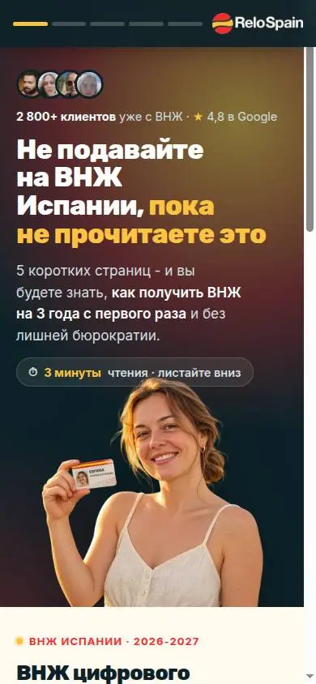
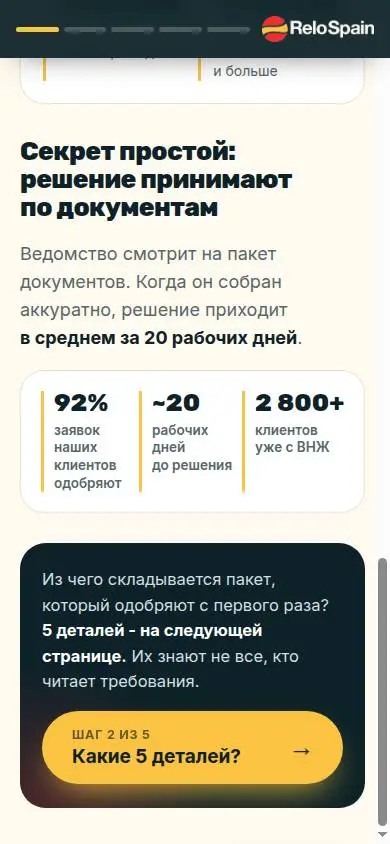
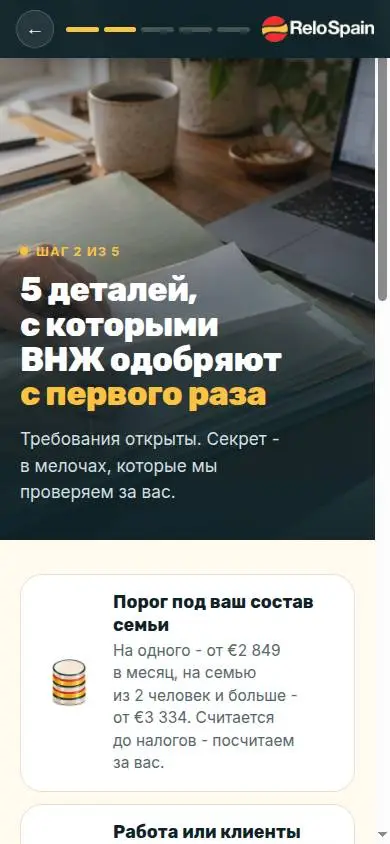
| Стр. | Вопрос | Ответ | Крючок на следующую |
|---|---|---|---|
| 1 | Подхожу ли я? | 4 ситуации, порог дохода, «решают по документам», 92% · 20 дней · 2 800+ | «Какие 5 деталей?» |
| 2 | Что собрать? | 5 условий, «испанский не нужен», «всё это делаем мы» | «Что даёт ВНЖ?» |
| 3 | Ради чего? | Жизнь у моря, Шенген 29 стран, 3 → 5 → 10 лет, 2 отзыва | «А кто вы такие?» |
| 4 | Кому доверить, сколько? | Путь по неделям, ≈ €4 000 с составом, юрлицо, истории с датами | «Получить мой план» |
| 5 | Что дальше? | Квиз 3 вопроса кнопками → телефон или ник, мессенджер, имя → пример первого сообщения эксперта, «звонить не будем» | заявка |
Сильные детали: догоняющая кнопка с 3-й страницы; квиз сам определяет сегмент и отправляет его в цель; «так выглядит первое сообщение»; своя запись визитов (rrweb), потому что в коде написано «у Метрики нет записей вебвизора с 11.10.2026» – это стоит проверить у нас.
Два слоя. Слой 1 – одно обещание, 5 механик первого экрана (тест, что вовлекает). Слой 2 – 3 сегмента × 2 угла на одном каркасе.
| Вариант | Механика первого экрана |
|---|---|
| v1 | Кнопки «моя ситуация» + список «что проверяем до оплаты» |
| v2 | Полный длинный лендинг: план ВНЖ, квиз 4 вопроса, видео клиентов, продление |
| v3 | Кнопки ситуации + шкала пути + цена |
| v4 | «Когда хотите начать?» → «карта у вас примерно к 7 февраля 2027» (дата от сегодня) |
| v5 | Мини-конфигуратор (чем занимаетесь, кто едет) + макет карты резидента |
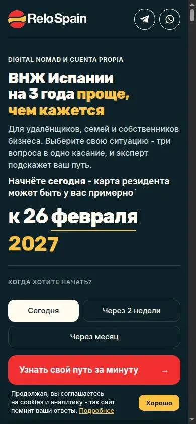
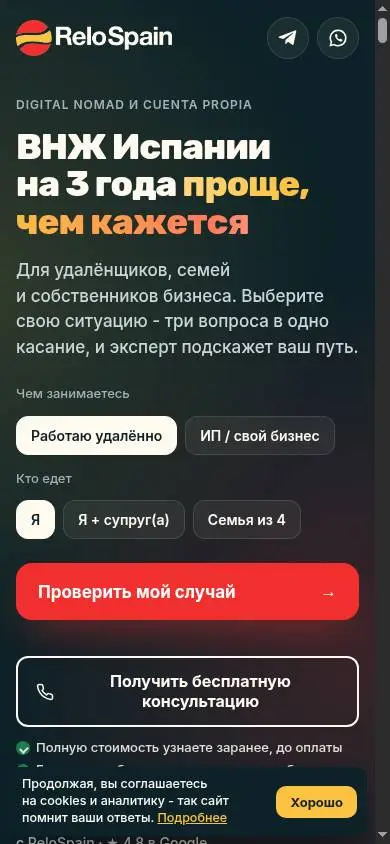
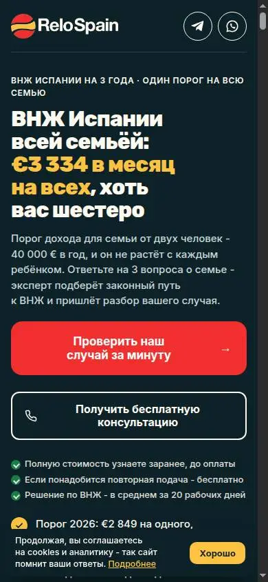
| Сегмент | Угол А (рассудок) | Угол Б (страх или мечта) |
|---|---|---|
| Удалёнщики | nomad-a «Проходите ли вы» (сейчас отдаёт ту же страницу, что v2) | nomad-b «Честно до оплаты»: вердикт и смета до договора, «откажут – подадим заново» |
| Семьи | family-a «€3 334 в месяц на всех, хоть вас шестеро» | family-b «Переезд с детьми по плану», школы, 1 000+ семей |
| Бизнес | biz-b «Сначала налоги, потом документы», дивиденды не в счёт | biz-a «Хватит просить визу», Шенген без визовых центров |
Каркас сегментной страницы: свой H1 + 3 буллета с цифрой + кнопка-результат («Получить вердикт и смету», «Разобрать мою структуру и налоги») → общий калькулятор даты → общие цифры → «Узнаёте себя?» с цитатами боли этого сегмента → дальше общее. 6 страниц по цене одной.
klip-lending – понятие, два вида, каркас кадров, риски.tg-shlyuz-perekhod – кнопка-шлюз в Telegram и цель с отсевом ботов.segmentnye-lendingi-segment-ugol – сегмент × угол и тест механик первого экрана.cenovoy-filtr-i-video-dorogo – ценовой фильтр, видео «почему дорого», окно на выходе.strugovec-001 и relospain-001 в базе прототипов.